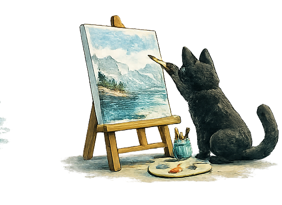

Gestalten
Vorbemerkung zur Geschichte von Herrn Kamus und seiner Pitalis
Eine ältere Geschichte als Denkbild über Abbildungen, Zahlen und das, worauf sie zeigen.
Light up Reader
Was verstanden wurde, kann Form annehmen: als Text, Bild, Projekt oder Versuch.

Texte in diesem Raum
Gestalten
Diese Geschichte entstand vor vielen Jahren.
Damals las ich sie vor allem als Kritik an einer Welt, die Geld oft wichtiger nimmt als Menschen.
Heute lese ich sie anders.
Je älter ich werde, desto häufiger begegnet mir ein Muster, das weit über Geld hinausgeht: Wir neigen dazu, die Abbildung mit dem Abgebildeten zu verwechseln. Wir betrachten Noten und vergessen das Lernen. Wir betrachten Diagnosen und vergessen den Menschen. Wir betrachten Reichweiten, Kennzahlen und Rankings und verlieren aus dem Blick, worauf sie ursprünglich einmal hinweisen sollten.
Vielleicht geht es in dieser Geschichte deshalb gar nicht in erster Linie um Kapitalismus.
Vielleicht geht es um etwas viel Allgemeineres.
Um die Frage, was geschieht, wenn wir die Wegweiser wichtiger nehmen als das, worauf sie zeigen.
Die folgende Geschichte habe ich bewusst nicht überarbeitet.
Sie stammt aus dem Jahr 2013 und darf ihre Ecken, Kanten und ihren damaligen Blick auf die Welt behalten.
Herr Ka(Pitalis)mus und seine Sucht nach Geld
Ohne Rücksicht auf Verluste ging Herr Kamus gegen die Menschen vor. Er machte nicht Halt, vor den Herzen der Menschen. Er hielt nicht inne, vor Wahrheit und Liebe. Herr Kamus kannte nur seine Sehnsucht nach Macht, für Glorie und Ruhm. Manchmal schwelgte er in Träumen, sehnte sich nach mehr Gold, mehr Prunksucht, nach mehr und mehr. Und weil er das Geld und die Muße dazu hatte, ließ sich alles, was er wünschte, erfüllen. Er hatte ein teures Auto, eine Villa, einen Swimmingpool, ein virtuelles Konto mit Milliarden und eine eigene Insel, groß wie Hawai. Doch niemals war sein Herz erfüllt, seine Sinne wach oder seine Gier befriedigt. Seine Frau Pitalis ignorierte ihn bei Tag und Nacht, war ständig unterwegs, wechselte von der einen in die andere Hand und wütete unter den Menschen. Alle Welt war scharf auf Pitalis. Jeder wollte sie haben. Morde wurden ihretwegen begangen, Kriege wegen ihr geführt. Oft saß Herr Kamus am Strand und blickte aufs Meer, fühlte, das etwas fehlte.
Er fühlte sich leer und er sprach zum Himmel. „Meine Pitalis hat mich verlassen, nur selten bekomme ich sie noch zu Gesicht. Niemals hat sie ein liebes Wort, niemals einen Blick für mich. Oft erblicke ich Fremde in ihrem Gesicht und hasche ich nur einen Moment nach ihr, löst sie sich in Luft auf. Sie tischt mir Zahlen auf und Gleichungen, die ich nicht verstehe. Alle rätseln über Pitalis, doch niemand hat sie gesehen. Und treffe ich gar einen, der noch süchtiger ist, so trachtet er alles zu vernichten. Erschrocken erblicke ich die Zahlen in dessen Augen. Und alle erinnern mich in erschreckender Weise an meinen Onkel Dagobert.“
Da öffnete sich ein Tor. Eine Schwelle zu einer anderen Welt. Alles sah gleich aus, und doch fühlte sich Herr Kamus anders. Er lief den Strand entlang, vor ihm glühte weiß der Sand. Herr Kamus trug nun nichts mehr an sich, als Hemd und Hose. Und ihm bangte in dieser fremden Welt, mit leeren Händen, leeren Taschen, unbeschmückt und bar allen Hilfsmitteln. Plötzlich war er ein niemand. Er kehrte auf sein Grundstück wieder, sah seine Villa verschwunden, sein Hab und Gut entrückt, wollte sich entsetzt an den Hut fassen, doch Wunder- auch dieser fehlte. Eilig lief er einen Weg entlang, der sich vor ihm ausbreitete, sich ringsum in die Dünen schlängelte. Fußabdrücke hatten sich dort gesammelt und plötzlich trat ein Fremder vor ihn auf den Weg. “ Guten Tag, mein Name ist Niemand. Ich habe nichts, brauche nichts und bin glücklich. Weil hinter den Dünen noch unzählige weitere Niemands leben und all das teilen, das zu teilen uns gegeben ist. Was verziehst du trübsinnig dein Gesicht, was fehlt dir? Vielleicht kann ich dir helfen?“
Herr Kamus erinnerte sich: “ Meine Pitalis, wo ist meine Pitalis?“ Die beiden liefen gemeinsam den Weg entlang, als das Gebüsch raschelte und ein junges Mädchen zwischen den Büschen hervortrat: “ Wie sieht sie denn aus, deine Pitalis?“ Da musste Herr Kamus lange Zeit überlegen. Schlecht konnte er sich noch an sie erinnert, weil ihn die neue fremde Welt so berauschte und beglückte. Plötzlich konnte er die Blumen riechen und den Sand unter seinen Füßen fühlen. Beinahe begann er sich für seine Sehnsucht nach Pitalis zu schämen. Darum senkte er beim Antworten den Kopf ebenso wie seine Stimme um einige Oktaven: “ Sie ist hauchzart und dünn, recht eckig und trägt viele Gesichter. Doch habe ich sie lange Zeit nicht gesehen. Manchmal schickt sie Telegramme mit unverständlichen Zahlen. Doch mehr ist mehr. Das glauben zumindest die Menschen in meiner Welt.“ Da wechselten Herr Niemand und das junge Mädchen wissende Blicke, “ kommen sie Herr Kamus, kommen sie mit uns, sie werden hier alles finden. Vergessen sie ihre Pitalis, sie ist nur Trug und Schein. Ein Bildnis der echten Pitalis, ein Schatten ihrer selbst.
Kapital ist kein „muss“. Nur die Gier lässt ihn keimen. Lediglich Unterschiede und Widrigkeiten lässt er wachsen.“ Und die beiden nahmen Herrn Kamus bei der Hand: „Uns mangelt es nicht an Verstand, lediglich der Stand, der ist uns entschwunden. Drum sind wir alle gleich und sind in unsrem Reich sehr reich. Tatsächlich erreichten die drei am Wegesrand eine weitere Gestalt, die sich ihnen anschloss, wiederum an der nächsten Biegung eine weitere, bis sie schließlich zu Hunderten ein Dorf erreichten, das an einem Berg gewachsen war, an dem jeder dem anderen half. Überrascht griff sich Herr Kamus an den Kopf. Überall auf dem Boden verstreut lagen Geldscheine aus unzähligen Ländern, in unterschiedlichen Farben, mit variierenden Zahlen. Da konnte Herr Kamus nicht mehr an sich halten und begann den Boden zu küssen. Folgte den Scheinen, ringsum die enttäuschten Gesichter der Menschen ignorierend, durch die ganze Stadt. Bis er schlagartig vor einer Tür stand, und weil er weiter den Scheinen folgte, sah er sie nicht öffnen und erhielt einen vollen Schlag ins Gesicht.
Heraus trat eine Frau. Die Wunderbarste, die er jemals getroffen hatte und lächelte ihn an. „Das wurde aber auch Zeit. Jahrelang himmelst du meine Telegramme an, anstatt meiner selbst. Hast du niemals gemerkt, dass diese Zahlen und Scheine virtuell sind? Die Hoffnung hatte ich schon aufgegeben, als ich dich so am Strand sitzen sah. Ich bin die echte Pitalis und das ist mein Dorf. Nur wer sich von der Illusion abwandte, hat es gefunden. Nun kehre zurück in die Welt und erkläre den Menschen, wer Pitalis wirklich ist. Am Ende werde ich auf dich warten. Wie all die anderen hier. “ Und Herr Kamus verstand, wie süchtig und verliebt er in Illusionen und Trugbilder gewesen war. In Abbildungen und Wirren einer Welt, die auf falschen Prinzipien aufgebaut war, die eine Pitalis verehrten, die nicht die wahre Pitalis war. Darum senkte er den Kopf und kehrte zurück. Mit einer beinahe unlösbaren Aufgabe, die er wie er sich dennoch gewiss war, eines Tages in diese Welt zurückbringen würde.
Gestalten
Ein Gedankenspiel über Wasser, Reis und die Grenzen unserer Gewissheiten

Wir wissen, dass Worte Menschen verändern können.
Ein einziges Gespräch kann Mut machen oder zerstören.
Ein Satz kann Hoffnung schenken oder jahrelang nachhallen.
Ein Lob kann beflügeln.
Eine Kränkung kann Jahrzehnte überdauern.
Das erscheint uns selbstverständlich.
Doch was wäre, wenn Gedanken und Worte nicht nur Menschen beeinflussen würden?
Was wäre, wenn sie darüber hinaus Spuren in der materiellen Welt hinterließen?
Vor einigen Jahren sorgten die Experimente des japanischen Autors Masaru Emoto für Aufmerksamkeit. Er behauptete, Wasser könne auf Worte, Gedanken, Musik oder Gefühle reagieren. Positive Botschaften sollten dabei andere Kristallstrukturen hervorbringen als negative.
Später entstanden ähnliche Experimente mit Reis.
Menschen stellten mehrere Gläser mit gekochtem Reis auf und behandelten sie unterschiedlich. Mit einem Glas wurde freundlich gesprochen. Ein anderes wurde beschimpft. Ein drittes ignoriert.
Die Ergebnisse wurden fotografiert, diskutiert und tausendfach im Internet geteilt.
Die einen sahen darin einen Beweis.
Die anderen einen Irrtum.
Bis heute gelten die Versuche als umstritten. Die Ergebnisse konnten nicht in einer Weise reproduziert werden, die einen wissenschaftlichen Konsens hervorgebracht hätte.
Damit ist die Frage weder eindeutig beantwortet noch endgültig abgeschlossen.
Doch vielleicht liegt ihr eigentlicher Wert ohnehin an anderer Stelle.
Stellen wir uns für einen Moment vor, die Hypothese wäre richtig.
Nicht bewiesen.
Nicht widerlegt.
Einfach nur angenommen.
Nehmen wir an, Gedanken und Worte würden tatsächlich materielle Systeme beeinflussen.
Dann wäre die Konsequenz erstaunlich.
Der Mensch besteht zu einem großen Teil aus Wasser.
Tiere bestehen zu einem großen Teil aus Wasser.
Pflanzen bestehen zu einem großen Teil aus Wasser.
Selbst die Erdoberfläche wird überwiegend von Wasser bedeckt.
Wenn Gedanken tatsächlich Spuren hinterließen, wäre ihre Wirkung möglicherweise größer, als wir gewöhnlich annehmen.
Die moderne Welt trennt häufig zwischen Innen und Außen.
Gedanken gehören in den Kopf.
Materie gehört in die Welt.
Die Grenze erscheint klar.
Doch was, wenn sie weniger eindeutig ist?
Was, wenn unsere innere Welt nicht vollständig von der äußeren getrennt ist?
Was, wenn Wahrnehmung, Haltung und Beziehung mehr Einfluss besitzen, als wir derzeit messen können?
Vielleicht ist das der Grund, warum diese Experimente so viele Menschen faszinieren.
Nicht weil sie einen Beweis liefern.
Sondern weil sie eine Möglichkeit andeuten.
Die Möglichkeit, dass Gedanken nicht völlig folgenlos sind.
Dabei muss man nicht einmal an Wasserexperimente glauben, um einen Teil dieser Idee nachvollziehen zu können.
Wir beobachten jeden Tag, dass Menschen auf ihre Umgebung reagieren.
Ein Kind, das Liebe erfährt, entwickelt sich oft anders als ein Kind, das nur Ablehnung erlebt.
Ein Mensch, dem Vertrauen entgegengebracht wird, verhält sich häufig anders als jemand, dem ausschließlich Misstrauen begegnet.
Eine Gemeinschaft verändert sich durch die Art, wie ihre Mitglieder miteinander umgehen.
Unsere Gedanken beeinflussen unsere Gefühle.
Unsere Gefühle beeinflussen unser Verhalten.
Unser Verhalten beeinflusst die Welt.
Darüber besteht kaum Streit.
Die eigentliche Frage lautet deshalb vielleicht gar nicht:
Verändert ein Gedanke Wasser?
Sondern:
Wie weit reicht die Wirkung unserer inneren Welt?
Vielleicht endet sie an den Grenzen unseres Körpers.
Vielleicht reicht sie weiter.
Vielleicht fehlt uns noch etwas, um die Frage beantworten zu können.
Die Geschichte der Menschheit ist voller Gewissheiten, die später korrigiert wurden.
Und voller Vermutungen, die sich als Irrtum erwiesen.
Deshalb lohnt es sich manchmal, eine Frage offen zu lassen.
Nicht jede Idee muss sofort geglaubt werden.
Aber auch nicht jede Idee muss sofort verworfen werden.
Manche Gedanken verdienen es, eine Weile betrachtet zu werden.
Wie ein Stein in einem stillen See.
Nicht weil wir bereits wissen, wohin die Wellen laufen.
Sondern weil wir beobachten möchten, ob überhaupt welche entstehen.